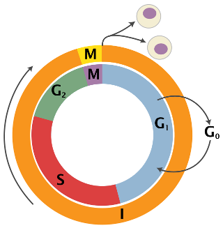

Welcome to adobo’s documentation!¶
What adobo is¶
adobo is an analysis framework for single cell RNA sequencing data (scRNA-seq) and enables exploratory analysis through a set of Python modules. adobo can be used to compose scripts, used in interactive workflows and much more. The goal of adobo is to consolidate single cell computational analysis methods in the Python 3.x programming language. adobo can be used to construct new pipelines and workflows in order to facilitate biological interpretation of scRNA-seq data.
Contact developer and maintainer¶
adobo is developed by Oscar Franzén at Karolinska Institutet. Limited support is available over e-mail: p.oscar.franzen@gmail.com or oscar.franzen@ki.se
Notes on this document¶
Some basic knowledge of Python, NumPy and pandas and their commonly used data structures is helpful but not necessary. Many of adobo’s functions have parameters with sensible defaults so that all parameters don’t need to be specified upon calling a specific function. For clarity, the most important parameters are shown in the examples below.
We refer to the adobo package as ‘ad’.
Installation¶
First step is to install adobo. The recommended way to install adobo is to first clone the GitHub repository and then use pip3 from your terminal, which will also install necessary dependencies (instead of using git one can also navigate to the repository and press the download button):
$ git clone https://github.com/oscar-franzen/adobo.git
$ cd adobo
# local installation
$ pip3 install --user .
# below installs adobo without package dependencies (not recommended)
$ pip3 install --user --no-deps .
Note
Support for PyPI is on the TODO list.
Note
adobo is developed and tested on Python version 3.6.x; older versions may work but are untested.
After installing it, you can now delete the cloned repository and test that everything works by firing up your Python 3 interpreter (the OPENBLAS_NUM_THREADS environmental variable prevents unexpected low-level multithreading):
$ export OPENBLAS_NUM_THREADS=1
$ python3
Try importing the library and it should greet you with the current version and the URL to the documentation (this page):
>>> import adobo as ad
adobo version 0.1. Documentation: https://oscar-franzen.github.io/adobo/
Package organization¶
adobo is organized into several modules containing related functions. All module and function names are lowercase to make them easier to remember.
Module name |
Meaning |
|---|---|
|
data preprocessing |
|
the dataset container class |
|
dimensional reduction techniques |
|
highly variable gene discovery |
|
normalization of raw read counts |
|
reading and writing data (input/output) |
|
functions related to data clustering operations |
|
differential expression between cell clusters |
|
data visualization |
|
functions related to biology, for example cell cycle and cell type prediction |
|
miscellaneous or general statistical functions that don’t fit anywhere else |
Internal modules¶
These do not need to be accessed but are listed here for documentation purposes.
Module name |
Function content |
|---|---|
|
related to color generation |
|
internal utilities |
|
internal constants |
Getting started and pre-processing your data¶
Loading the package¶
The first step is to load the adobo package by importing it:
import adobo as ad
Note
Debug information in the form of traceback output is suppressed by default. However, this information is often useful when trying to solve program bugs. To enable full traceback set:
ad.debug=1
Loading your data from a text file¶
First we need to create a new adobo object, which is an instance of the class adobo.data.dataset. This will be a new object containing the single cell data, meta data and analysis results. The input file should be a gene expression matrix (rows as genes and cells as columns) in plain text format. Fields can be separated by any character and it can be changed with the sep parameter. sep can be a single character or a regular expression (default is the regular expression \s). The data matrix file can have a header or not (header=True indicates a header is present, otherwise use header=False). adobo.IO.load_from_file() calls datatable.fread and any additional parameters are passed on into this method. The function adobo.IO.load_from_file() is used to load data from a raw read counts matrix and the returned object is an instance of adobo.data.dataset.
We can load compressed data directly without having to uncompress it first; the compression format is detected automatically (gzip, bz2, zip and xz are supported).
In the below example we set bundled=True, which tells adobo to search its internal data directory for the file. For normal data, bundled should be False (default).
# example 1
exp = ad.IO.load_from_file('GSE95315.tab.gz',
desc='mouse brain data',
sparse=True,
verbose=True,
bundled=True, # used to load "internal" data
header=True,
sep='\t')
# example 2
exp = ad.IO.load_from_file('GSE95315.tab.gz')
desc can be used to specify an arbitrary string describing the data, but it can also be left empty. The raw read counts matrix is stored in the attribute count_data inside the dataset object (adobo.data.dataset.count_data). Here we use data from GEO95315 and it ships with adobo. By default the data are stored in a sparse data frame; sparsity can slow down the data loading step, but leaves a much smaller memory footprint. Sparsity can be turned off by setting sparse=False in load_from_file.
Your gene expression data is stored in the attribute exp.count_data, and after loading it is good practise to examine that the data were loaded properly:
>>> exp
53,889 genes and 384 cells were loaded
Important
The loaded data must not be normalized, i.e. it should be raw read counts. Non-integer values will trigger a loading error.
Note
All downstream operations and analyses are performed and stored as attributes in the adobo object, i.e. functions are applied on this object.
Many adobo functions have a verbose parameter, which when True makes the function more verbose.
Creating the data class object directly from a pandas data frame¶
In many cases we already have our data in a data frame, in those cases we can just create the container object directly:
# where 'df' is the data frame, columns are cells and rows are genes
exp = ad.dataset(df)
Saving object¶
It is convenient not having to repeat analyses once they are finished. Saving an object to disk can be done via the joblib package (complete joblib docs; Python’s standard pickle is another option):
import joblib
# compress=0 will turn off data compression
joblib.dump(exp, 'test.joblib', compress=3)
exp = joblib.load('test.joblib')
Instead of writing three lines of code and always remembering the name of the output file, we can specify output_file in adobo.IO.load_from_file() and then calling adobo.data.dataset.save().
Accessing meta data for cells and genes¶
Meta data are stored in the adobo object (an instance of adobo.data.dataset). Two data structures (instances of pandas.DataFrame) hold meta data for cells and genes, respectively:
>>> exp.meta_cells
total_reads status detected_genes mito ERCC rRNA
EXP1_COL01_ROW01_S1 5935 OK 426 1455 2 0
EXP1_COL01_ROW02_S1 3036 OK 464 1583 0 0
EXP1_COL01_ROW03_S1 38477 OK 1961 20935 7 4
EXP1_COL01_ROW04_S1 63962 OK 3478 4463 7 0
EXP1_COL01_ROW05_S1 1885 OK 993 127 0 0
... ... ... ... ... ... ...
EXP1_COL20_ROW36_S20 43051 OK 3277 4975 29 0
EXP1_COL20_ROW37_S20 162617 OK 4224 54144 55 0
EXP1_COL20_ROW38_S20 56649 OK 3281 4223 31 0
EXP1_COL20_ROW39_S20 3367 OK 927 1352 0 0
EXP1_COL20_ROW40_S20 422 OK 294 75 0 0
[800 rows x 6 columns]
>>> exp.meta_genes
expressed expressed_perc status mitochondrial ERCC rRNA
ENSMUSG00000102693.1 0 0.00000 OK False False False
ENSMUSG00000064842.1 0 0.00000 OK False False False
ENSMUSG00000051951.5 0 0.00000 OK False False False
ENSMUSG00000102851.1 0 0.00000 OK False False False
ENSMUSG00000103377.1 1 0.00125 OK False False False
... ... ... ... ... ... ...
ERCC-00164 145 0.18125 OK False True False
ERCC-00165 25 0.03125 OK False True False
ERCC-00168 123 0.15375 OK False True False
ERCC-00170 91 0.11375 OK False True False
ERCC-00171 32 0.04000 OK False True False
[45884 rows x 6 columns]
Adding meta data¶
Meta data such as experimental categories (e.g. tissue, time points, batches, etc) can easily be added to your adobo object by calling adobo.data.dataset.add_meta_data(), which takes four parameters:
axiscan be either ‘cells’ or ‘genes’ depending on whether your added data represent data for cells or genes.the
keyis used as variable name, choose something that makes sense, such as “tissue” for different tissues.datashould be alist, a numpy array or a Pandas Series, containing your data with the same length as youraxis(although ifdatais of type pandas.Series the length does not need to match as long asindexis set in the Series).type_(note, this one has a trailing underscore) indicates if the data are categorical or continuous (defaults to categorical).
Getting detailed help¶
All functions in adobo have full documentation, which is accessible as docstrings on the Python interactive console as well as online:
help(ad)
help(ad.IO.load_from_file)
Data examination¶
After loading the data a first step is to examine the number of reads per cell. Cells with an unusual high or low number of reads may be artifacts:
# These how's are supported: violin, boxplot and barplot.
ad.plotting.overall(exp, what='reads', how='histogram')
Which will generate the plot:
ad.plotting.overall(exp, what='genes', how='histogram')
It is also useful to relate the number of detected genes with the total read depth into a scatter plot:
ad.plotting.overall_scatter(exp)
Detecting ERCC spikes¶
ERCC are known amounts of synthetic constructs added to RNA-seq libraries for quality control and normalization purposes [1]. Not all experiments use ERCC spikes, but many do. The ERCC “genes” are usually prefixed with ERCC- in the gene expression matrix. This function is used to annotate them so that they are not included in downstream analyses.
The adobo.preproc.find_ercc() is used to flag the ERCC spikes (stored in the ERCC column of adobo.data.dataset.meta_genes):
ad.preproc.find_ercc(exp, ercc_pattern='^ERCC[_-]\\S+$')
Detecting mitochondrial genes¶
Mitochondrial gene expression signals can serve to indirectly tell us how healthy the captured cells are. Dying and low quality cells tend to exhibit unusually high signal from these genes. One convenient function identifies mitochondrial genes in your data and adds the percent of mitochondrial gene expression to the cellular meta data. Often mitochondrial genes in the human and mouse genomes have gene symbols starting with the prefix mt-, but this might vary from species to species.
ad.preproc.find_mitochondrial_genes(exp, mito_pattern='^mt-')
Sometimes a regular expression is not possible and we can instead supply a list of gene IDs or symbols representing mitochondrial genes:
ad.preproc.find_mitochondrial_genes(exp, genes=['geneA','geneB','geneC'])
Applying simple filters¶
Simple filters refers to applying a strict minimum cutoff on the number of expressed genes per cell and the total read depth per cell. Simple filters are usually effective in removing low quality cells and uninformative genes. If your data come from Drop-seq, 10X, etc, requiring at least 1000 uniquely mapped reads per cell is often sufficient:
ad.preproc.simple_filter(exp, minreads=1000, minexpgenes=0.001)
Important
If your protocol is applying full-length mRNA sequencing, e.g. SMART-seq2, then your minreads threshold should be higher, for example 50000.
Note
adobo.preproc.simple_filter() also has a maxreads parameter, which can be used to remove cells with an upper read count limit (perhaps useful for limiting doublets). However, this parameter is not set by default.
It is also desirable to remove genes with an expression signal in very few cells; such genes may contribute more noise than information. The minexpgenes parameter can be used to control how genes are filtered out. If you wish to not remove any genes at all, simply set it to zero:
ad.preproc.simple_filter(exp, minreads=1000, minexpgenes=0)
Setting minexpgenes to a fraction indicates that at least that fraction of cells must express any gene. If minexpgenes is an integer it refers to the absolute number of cells that at minimum must express the gene for the gene not to be filtered out.
To reset all simple filters to original:
exp.reset_filters()
Dynamic detection of low quality cells¶
A more sophisticated approach to detection of low quality cells is to use the function adobo.preproc.find_low_quality_cells(), which uses Mahalanobis distance to identify bad cells from five quality metrics.
Important
find_low_quality_cells requires that there are ERCC spikes in your data.
The parameter rRNA_genes should either be a string containing the full path to a file on disk contaiing genes that are rRNA genes (the file should have one gene per line). rRNA_genes can also be a pandas.Series object with gene symbols.
ad.preproc.find_low_quality_cells(exp, rRNA_genes=rRNA)
Like all adobo functions, find_low_quality_cells modifies the passed object. However, find_low_quality_cells also returns a list of cells that are classified as low quality; to prevent such behavior simply assign the return to a variable:
low_q_cells = ad.preproc.find_low_quality_cells(exp, rRNA_genes=rRNA)
Imputation of dropouts¶
“Dropouts” are artifacts caused by the low amounts of mRNA in single cells, causing expressed genes to become undetected in the expression data. Droplet-based protocols tend to have a greater number of dropouts. Several statistical procedures have been developed to impute missing expression values. adobo implements the method introduced by Li et al [2]. The original paper describes the theory; briefly, model parameters are estimated using the Gamma distribution, then it uses Elastic net regularization to fit a linear model, which is used to predict expression values of genes with zero expression. adobo’s imputation function is adobo.preproc.impute():
ad.preproc.impute(exp, filtered=True, res=0.5, nworkers='auto', verbose=True)
The parameter filtered is used to indicate if imputation should run on the quality-filtered data or on the complete raw read count matrix (default is to run on the filtered). Parallelization is achieved using Python’s multiprocessing module. The parameter nworkers can be used to set the number of worker processes, which can be ‘auto’ to autodetect this (although due to Python’s Global Interpreter Lock the number of workers should not be higher than the number of physical cores). Imputed data are stored in adobo.data.dataset.imp_count_data. If you have a low number of cells (<1000), set the cluster resolution parameter to something low, for example res=0.1. Finally, to use the imputed data, it must first be normalized:
ad.normalize.norm(exp, use_imputed=True, method='standard')
Note
Runtime varies depending on number of physical cores and size of the dataset. Typical runtime for a dataset consisting of ~1000 cells using 10 cores is 15 min.
Normalization¶
Normalization removes technical and sometimes experimental biases and is always necessary prior to analysis. Because a universal normalization scheme for scRNA-seq data is not available nor recommended, adobo supports several different procedures. The function adobo.normalize.norm() can be used to perform the following normalization methods:
- standard
Performs a standard normalization by scaling with the total read depth per cell and then multiplying with a scaling factor.
- rpkm
Normalizes read counts as Reads per kilo base per million mapped reads (RPKM) [3]. This method should be used if you need to adjust for gene length, such as in a SMART-Seq2 protocol. To use this procedure you must first prepare a file containing combined exon lengths for genes; the file should contain two columns, without a header, and columns separated by one space. The following columns must be present: (1) gene symbols and (2) the sum of exon lengths. The filename is set with the
gene_lengthsparameter, which can also take a vector.- fqn
Performs full quantile normalization [4]. FQN was a popular normalization scheme for microarray data. It is not very common in single cell analysis despite having been shown to perform well [5]. The present implementation does not handle ties well.
- clr
Centered log ratio normalization. This normalization scheme was introduced in Seurat version 3.0 [6]. It is a simple normalization scheme and is an alternative to
standard.- vsn
Variance stabilizing normaliztion based on a negative binomial regression model with regularized parameters. Introduced by [7] and represents a more sophisticated normalization approach. Appears to marginally improve resolution. Can be used if you have UMI counts.
All normalization schemes can be followed by log2-transformation by setting log2=True, which is the default.
To perform a standard normalization followed by log-transformation, run:
ad.normalize.norm(exp, method='standard')
ad.normalize.norm(exp, method='clr')
The normalized data are stored in the attribute adobo.data.dataset.norm_data, which is a dictionary of dictionaries. If we run multiple normalizations they are all stored in the norm_data and we can use the name name parameter in adobo.normalize.norm() to give it a name (default name is the method). We can always call is_normalized() to determine if a dataset has been normalized:
>>> exp.is_normalized()
True
Note
If you have previously executed adobo.preproc.find_ercc(), ERCC spikes will be normalized too, and these can be found in adobo.data.dataset.norm_ercc.
Examining analysis history¶
Downstream analyses are performed on the data object. At any time it’s possible to examine what functions have been applied on data object by calling adobo.data.dataset.assays():
>>> exp.assays()
Number of mitochondrial genes found: 0
Number of ERCC spikes found: 92
Normalization method: <not performed yet>
Has HVG discovery been performed? No
Detection of highly variable genes¶
Many algorithms used in scRNA-seq analysis perform better when used on a subset of measured genes [8]; the goal of the feature selection step is usually to extract a set highly variable genes (HVG). adobo currently implements the following strategies for HVG discovery:
- seurat
The function bins the genes according to average expression, then calculates dispersion for each bin as variance to mean ratio. Within each bin, Z-scores are calculated and returned. Z-scores are ranked and the top 1000 are selected. Input data should be normalized first. This strategy was introduced in Seruat [6], it is simple yet highly effective in identifying HVG.
- brennecke
Implements the method described in [9].
brenneckeestimates and fits technical noise using ERCC spikes (technical genes) by fitting a generalized linear model with a gamma function and identity link and the parameterization w=a_1+u+a0. It then uses the chi2 distribution to test the null hypothesis that the squared coefficient of variation does not exceed a certain minimum. False discovery rate (FDR)<0.10 is considered significant.- scran
scran fits a polynomial regression model to technical noise by modeling the variance versus mean gene expression relationship of ERCC spikes (the original method used local regression) [10]. It then decomposes the variance of the biological gene by subtracting the technical variance component and returning the biological variance component.
- chen2016
This method uses linear regression, subsampling, polynomial fitting and gaussian maximum likelihood estimates to derive a set of HVG [11].
- mm
Selection of HVG by modeling dropout rates using modified Michaelis-Menten kinetics [12]. This method calculates dropout rates and mean expression for every gene, then models these with the Michaelis-Menten equation (parameters are estimated with maximum likelihood optimization). The basis for using MM is because most dropouts are caused by failure of the enzyme reverse transcriptase, thus the dropout rate can be modelled with theory developed for enzyme reactions. This implementation works best for libraries sequenced to saturation (i.e. not Drop-seq).
Example:
ad.hvg.find_hvg(exp, method='seurat', ngenes=1000)
The results are stored in adobo.data.dataset.hvg.
Dimensional reduction¶
These are techniques to reduce the number of dimensions under consideration. After running these functions, results are stored in the dict adobo.data.dataset.dr.
Principal Component analysis (PCA)¶
PCA decomposition [13] of single cell data is for the most part necessary prior to clustering. The reason for this is because the graph construction benefits from a strong signal from each feature. PCA computation in adobo is performed by invoking adobo.dr.pca(). Scaling of the data should always be performed before PCA, and this is done by default (although it can be turned off by setting scale=False). Two approaches are available for PCA decomposition, and it should not matter much which one is used:
- irlb
Computed via truncated singular value decomposition by implicitly restarted Lanczos bidiagonalization [14]. irlb may be better at handling very large single cell datasets and it is the default.
- svd
The standard approach to PCA. Computed via singular value decomposition (svd). (More likely to raise
MemoryError.)
Examples:
# 75 components are returned by default, may need to be adjusted depending on your dataset
ad.dr.pca(exp, method='irlb', ncomp=75)
ad.dr.pca(exp, method='svd', ncomp=75)
Note
PCA components are stored in the dictionary adobo.data.dataset.dr and variable contributions are stored in the dictionary adobo.data.dataset.dr_gene_contr.
We can now examine the top contributing genes to each PCA component by producing a plot with adobo.plotting.pca_contributors().
To plot the top 10 contributing genes to the first five components:
ad.plotting.pca_contributors(exp, dim=[0,1,2,3,4], top=10)
We can also write the output to a file instead of showing it on the screen:
ad.plotting.pca_contributors(exp, dim=[0,1,2,3,4], top=10, filename='top_pca_genes.pdf')
The default number of components, 75, is often sufficient. However, a more deterministic approach is to generate an elbow plot using adobo.plotting.pca_elbow():
ad.plotting.pca_elbow(exp)
t-Distributed Stochastic Neighbor Embedding (t-SNE)¶
t-SNE [15] is a non-linear dimensional reduction technique that optimizes for local distance. It is the de facto dimensional reduction technique used to visualize scRNA-seq data [16]. adobo uses the scikit-learn implementation [17]. The most important parameter is perplexity (related to number of nearest neighbors) and it can greatly influence how your plot looks like. Suggested values for perplexity lies between 5 and 50, and it is recommened to try higher values for datasets with more cells. Additional parameters (such as early_exaggeration, learning_rate, n_iter, and n_iter_without_progress) do not usually need to be specified but will be passed into sklearn.manifold.TSNE. By default adobo runs t-SNE on the PCA decomposition:
ad.dr.tsne(exp, perplexity=30)
The recommended approach is to run t-SNE on PCA components, but it can sometimes be informative to run it on your entire normalized expression matrix (this will take significantly longer time):
ad.dr.tsne(exp, target='norm', verbose=True)
Note
t-SNE is non-deterministic. Different runs can give different results. To get a more reproducible t-SNE plot consider setting the seed parameter to any random integer, which will generate reproducible random numbers.
Clustering¶
A crucial step in scRNA-seq analysis is to group cells into clusters. Complex datasets consisting of thousands of cells can be reduced to a small number of clusters, which tend to be easier to analyze and interpret.
Important
Clustering is performed in PCA space, therefore PCA components must have been calculated first using adobo.dr.pca().
In adobo, clustering can be performed with a single line of code:
# to run leiden with the resolution set to 0.8 (only applicable for leiden)
ad.clustering.generate(exp, distance='euclidean', res=0.8, clust_alg='leiden')
# to run walktrap
ad.clustering.generate(exp, distance='euclidean', clust_alg='walktrap')
The above command will run the necessary steps to cluster your single cell dataset; the cluster membership vector is stored in adobo.data.dataset.clusters, i.e. represented by an array with the same length as the number of cells after pre-processing. adobo’s default clustering algorithm first builds a Shared Nearest Neighbor graph [19] and then finds communities in this graph using the Leiden algorithm [20] (default). It may become necessary to change value of the res (resolution) parameter to find the optimal clustering outcome.
By default adobo.clustering.generate() will return a dict containing cluster sizes (number of cells), use retx=False to disable this behavior.
Other community detection algorithms are also supported via the igraph package:
walktrap[21]spinglass[22]multilevel[23]infomap[24]label_prop(label propagation) [25]leading_eigenvector(Newman’s leading eigenvector method) [26]
Various parameters of the these algorithms can be changed in adobo.clustering.generate().
Note
spinglass does not scale well on large datasets [27].
Clustering visualization¶
Visualization of cells in 2d space is performed with the function adobo.plotting.cell_viz(). Before running cell_viz, the appropriate reduction functions must have been invoked (t-SNE or UMAP; see above). cell_viz can plot custom meta data, gene expression, and clustering outcomes. Three parameters specified as tuples control what to plot:
clusteringDefault is ‘leiden’.
metadataSpecify variable(s) listed as meta data in
adobo.data.dataset.meta_cells(added viaadobo.data.dataset.add_meta_data()).genesSpecify any gene symbol(s).
The above parameters can be mixed and will in such cases generate one subplot for every specified variable. The ncols parameter can be used to set the number of columns in the plot (default is 2).
Examples:
# tsne
ad.plotting.cell_viz(exp, reduction='tsne', clustering='leiden', metadata='detected_genes')
# plots 'leiden' by default
ad.plotting.cell_viz(exp, reduction='umap')
Plotting mitochondrial gene expression:
ad.plotting.cell_viz(exp, reduction='tsne', meta_data='mito_perc', clustering=(), genes=())
Cell cycle prediction¶
An extreme simplification of the cell cycle is shown below (figure from Wikipedia). It is often useful to get an understanding of cell cycle states in a new data set, and it boils down to predicting one of three cell cycle states for every cell: G1, S and G2M.
adobo contains a machine learning classifier based on the sklearn implementation of Stochastic Gradient Descent. The classifier is trained on mouse embryonic stem cells (n=288 cells) [28]. The original data can be retrieved from here. Cell cycle classification is performed by calling two functions:
# trains the classifier
clf, tr_features = ad.bio.cell_cycle_train()
# performs the actual classification of cells in your data
ad.bio.cell_cycle_predict(obj, clf, tr_features)
Classification is stored in the attribute adobo.data.dataset.meta_cells in a column cell_cycle. The current design does not support prediction scores, although this can easily be changed by changing the loss parameter.
We can visualize the results:
ad.plotting.cell_viz(obj, metadata='cell_cycle', clustering=(), genes=())
Important
Prediction is only valid on mouse data since the classifier is trained on mouse data. Make sure your gene expression contains Ensembl gene identifiers in one of the following two formats: ENSEMBL; GENESYMBOL_ENSEMBL.
Cell type prediction¶
Runs marker-based cell type prediction. The smallest predicted unit is a cell cluster. Cell type prediction works on mouse and human data. Gene symbols must be ued in your data. The min_cluster_size parameter specifies which clusters to ignore (i.e. clusters with fewer cells than this are ignored). Will run on all normalizations and clusterings as default (or specify which one with name and clustering).
ad.bio.predict_cell_type(exp, min_cluster_size=10, verbose=True)
The output is stored in the attribute adobo.data.dataset.norm_data.
Indices and tables¶
References¶
- 1
Lichun Jiang, Felix Schlesinger, Carrie A. Davis, Yu Zhang, Renhua Li, Marc Salit, Thomas R. Gingeras, and Brian Oliver. Synthetic spike-in standards for RNA-seq experiments. Genome Research, 21(9):1543–1551, September 2011. doi:10.1101/gr.121095.111.
- 2
Wei Vivian Li and Jingyi Jessica Li. An accurate and robust imputation method scImpute for single-cell RNA-seq data. Nature Communications, 9(1):997, March 2018. doi:10.1038/s41467-018-03405-7.
- 3
Ana Conesa, Pedro Madrigal, Sonia Tarazona, David Gomez-Cabrero, Alejandra Cervera, Andrew McPherson, Michał Wojciech Szcześniak, Daniel J. Gaffney, Laura L. Elo, Xuegong Zhang, and Ali Mortazavi. A survey of best practices for RNA-seq data analysis. Genome Biology, 17(1):13, January 2016. doi:10.1186/s13059-016-0881-8.
- 4
B.M. Bolstad, R.A Irizarry, M. Åstrand, and T.P. Speed. A comparison of normalization methods for high density oligonucleotide array data based on variance and bias. Bioinformatics, 19(2):185–193, 01 2003. doi:10.1093/bioinformatics/19.2.185.
- 5
Michael B. Cole, Davide Risso, Allon Wagner, David DeTomaso, John Ngai, Elizabeth Purdom, Sandrine Dudoit, and Nir Yosef. Performance assessment and selection of normalization procedures for single-cell rna-seq. bioRxiv, 2018. doi:10.1101/235382.
- 6(1,2)
Tim Stuart, Andrew Butler, Paul Hoffman, Christoph Hafemeister, Efthymia Papalexi, William M Mauck III, Marlon Stoeckius, Peter Smibert, and Rahul Satija. Comprehensive integration of single cell data. bioRxiv, 2018. doi:10.1101/460147.
- 7
Christoph Hafemeister and Rahul Satija. Normalization and variance stabilization of single-cell rna-seq data using regularized negative binomial regression. bioRxiv, 2019. doi:10.1101/576827.
- 8
Shun H Yip, Pak Chung Sham, and Junwen Wang. Evaluation of tools for highly variable gene discovery from single-cell RNA-seq data. Briefings in Bioinformatics, 02 2018. doi:10.1093/bib/bby011.
- 9
Philip Brennecke, Simon Anders, Jong Kyoung Kim, Aleksandra A Kołodziejczyk, Xiuwei Zhang, Valentina Proserpio, Bianka Baying, Vladimir Benes, Sarah A Teichmann, John C Marioni, and Marcus G Heisler. Accounting for technical noise in single-cell RNA-seq experiments. Nature Methods, 10:1093, September 2013. URL: https://doi.org/10.1038/nmeth.2645.
- 10
Aaron T. L. Lun, Davis J. McCarthy, and John C. Marioni. A step-by-step workflow for low-level analysis of single-cell RNA-seq data with Bioconductor. F1000Research, 5:2122, 2016. doi:10.12688/f1000research.9501.2.
- 11
Hung-I Harry Chen, Yufang Jin, Yufei Huang, and Yidong Chen. Detection of high variability in gene expression from single-cell RNA-seq profiling. BMC Genomics, 17(7):508, August 2016. doi:10.1186/s12864-016-2897-6.
- 12
Tallulah S Andrews and Martin Hemberg. M3Drop: dropout-based feature selection for scRNASeq. Bioinformatics, 35(16):2865–2867, 12 2018. doi:10.1093/bioinformatics/bty1044.
- 13
Hervé Abdi and Lynne J. Williams. Principal component analysis. Wiley Interdisciplinary Reviews: Computational Statistics, 2(4):433–459, 2010. doi:10.1002/wics.101.
- 14
James Baglama and Lothar Reichel. Augmented implicitly restarted lanczos bidiagonalization methods. SIAM J. Sci. Comput., 27(1):19–42, July 2005. doi:10.1137/04060593X.
- 15
Laurens van der Maaten and Geoffrey Hinton. Visualizing data using t-SNE. Journal of Machine Learning Research, 9:2579–2605, 2008.
- 16
Dmitry Kobak and Philipp Berens. The art of using t-sne for single-cell transcriptomics. bioRxiv, 2019. doi:10.1101/453449.
- 17
F. Pedregosa, G. Varoquaux, A. Gramfort, V. Michel, B. Thirion, O. Grisel, M. Blondel, P. Prettenhofer, R. Weiss, V. Dubourg, J. Vanderplas, A. Passos, D. Cournapeau, M. Brucher, M. Perrot, and E. Duchesnay. Scikit-learn: machine learning in Python. Journal of Machine Learning Research, 12:2825–2830, 2011.
- 18
Leland McInnes, John Healy, and James Melville. UMAP: Uniform Manifold Approximation and Projection for Dimension Reduction. arXiv e-prints, pages arXiv:1802.03426, Feb 2018. arXiv:1802.03426.
- 19
Levent Ertöz, Michael Steinbach, and Vipin Kumar. Finding clusters of different sizes, shapes, and densities in noisy, high dimensional data. In in Proceedings of Second SIAM International Conference on Data Mining. 2003.
- 20
V. A. Traag, L. Waltman, and N. J. van Eck. From Louvain to Leiden: guaranteeing well-connected communities. Scientific Reports, 9(1):5233, March 2019. doi:10.1038/s41598-019-41695-z.
- 21
Pascal Pons and Matthieu Latapy. Computing Communities in Large Networks Using Random Walks. Journal of Graph Algorithms and Applications, 2006.
- 22
Joerg Reichardt and Stefan Bornholdt. Statistical mechanics of community detection. Physical Review E, 74:016110, 2006.
- 23
Vincent D. Blondel, Jean-Loup Guillaume, Renaud Lambiotte, and Etienne Lefebvre. Fast unfolding of communities in large networks. Journal of Statistical Mechanics: Theory and Experiment, 2008(10):10008, Oct 2008. doi:10.1088/1742-5468/2008/10/P10008.
- 24
Martin Rosvall and Carl T. Bergstrom. Maps of random walks on complex networks reveal community structure. Proceedings of the National Academy of Sciences, 105(4):1118–1123, 2008. doi:10.1073/pnas.0706851105.
- 25
Usha Nandini Raghavan, Réka Albert, and Soundar Kumara. Near linear time algorithm to detect community structures in large-scale networks. Phys. Rev. E, 76:036106, Sep 2007. doi:10.1103/PhysRevE.76.036106.
- 26
M. E. J. Newman. Finding community structure in networks using the eigenvectors of matrices. Phys. Rev. E, 74:036104, Sep 2006. doi:10.1103/PhysRevE.74.036104.
- 27
Zhao Yang, René Algesheimer, and Claudio J. Tessone. A Comparative Analysis of Community Detection Algorithms on Artificial Networks. Scientific Reports, 6:30750, August 2016. URL: https://doi.org/10.1038/srep30750.
- 28
Florian Buettner, Kedar N Natarajan, F Paolo Casale, Valentina Proserpio, Antonio Scialdone, Fabian J Theis, Sarah A Teichmann, John C Marioni, and Oliver Stegle. Computational analysis of cell-to-cell heterogeneity in single-cell RNA-sequencing data reveals hidden subpopulations of cells. Nature Biotechnology, 33:155, January 2015.